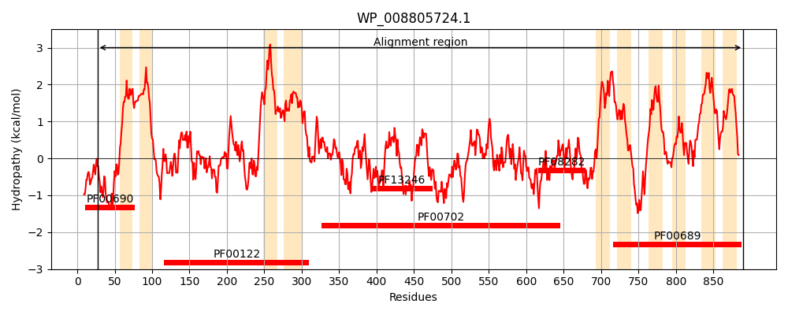
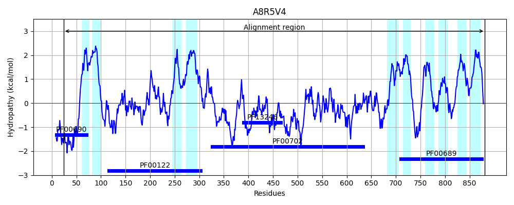

Hit Accession: A8R5V4
Hit TCID: 3.A.3.2.41
Hit Description: gnl|BL_ORD_ID|888 gnl|TC-DB|A8R5V4|3.A.3.2.41 P-type Na+-ATPase OS=Exiguobacterium aurantiacum GN=mna PE=3 SV=2
Mach Len: 865
e:0.000000
Query TMS Count : 10
Hit TMS Count: 10
TMS-Overlap Score: 8.150000
Predicted Substrates:CHEBI:9175;sodium(1+)
BLAST Alignment:
Score: 2077 , Bit scores: 804 bits, E-value: 0.0e+00, Alignment length: 865, Percentage identity: 49
Query: 27 EGISGTEAATRLQQYGENALPQKPGKPAWLRFIVHFNDVLIYVLLAAALLKAVMGHWIDMAVILAVAVVNALIGFIQESNAEKSLQSIRNMLSSEAVVIRQGNHETIPTTSLVPGDIVVIRAGDRIPADLRVIEAHNLRVEEAILTGESTVVEKTTEPLSGDLPLGDRSNLLFSGTTVSSGAGKGIVVATGGDTELGHINQMMAGIEKHRTPLLVQMDKLGKAIFILILVMMAALFVFSLLFRDMPVSELMLSLISLAVASVPEGLPAIISIILSLGVQAMARQKAIIRKLPTVETLGAMTVICSDKTGTLTMNEMTVKAVITADSVYRVEGDSYEPVGKIHAIDDPTPVAVAPGTLFERYLRTIDLCNDSQLIKDE-SGLWKITGGPTEGALKVLAAKVTLPPLTSELRSKIPFDSQYKYMSTLYRLGEEEVVLVTGAPDVLFRLCQYQQSDSGLQPLDLPYWEGKIEEYAREGLRMVAAAWKPASAGQTELTHQDLQQGVILLGVAGMMDPPRPEAITAIADCLQAGIRVKMITGDHPQTAMSIGKMLGIGNAGNAITGRELEVMDDAQLSVAAQQYDIFARTSPEDKFRLVQALQSKKEIVGMTGDGVNDAPALKQADVGVAMGIKGTEVTKEAADMVLTDDNFATIASAVREGRRVYDNLKKTILFVMPTNLAQGLLIVIALLAGNVLPLTPVLILWMNMATSATLSFGLAFEAGEKNIMRRPPRDPKIHVMDGFAIWRVAFVGSMIAVSAFILEAWLQPRGYSPEFIRTVLLQTLVTAQWFYMLNCRVSDGFSLTKSLLANKGIWIVSGVLLVLQLLIIYAPFMQMLFGTTGLPFRYWVITFIIGFAMFLIVELEKPLTR 890
+G+ A R++++G+N LP+ P WL+F+ FNDVLIYVLLAAA++ AV+G+W D VI V ++ +IG++QE+ AE++L+ I+NMLS A+V R G + I LVPGDIV ++ GD+IP DLR+I A N++VEE+ LTGE+ V+KT +PL + LGDR+NL FSGT+V++G G GIV+ATG TELG IN +A +EK +TPL+ Q + GK + +I + F+F RD +EL+L++I LAVA +PEGLPAIISIIL+LGV+ MA KAI++ LP+VETLGA++VICSDKTGTLT NEMT + + AD +V G Y P G+I + +D + + L CNDS L DE S WKITG PTEG L L K + SKIPFDS +KYM+TL +E V+ + GAPD LF + + SDS P D+ WE K+ + A++G R++ A + + + ++ H DL +G+ LG+ G+MDPPRPEAI A+ +C AGI+VKMITGDH +TA++IG LGI AI G E++ + D +L+ QY+IFARTSPE+K RLV+ALQ++ IV MTGDGVNDAPAL++AD+GVAMGIKGTEV+KEAA+MVL DDNF TI AV+EGRRVYDNLKKTILF++PTN AQG ++++++ G LPLT + ILW+NM + TLSF +AFE E + M+R PR K ++ + I+R+ V +I + ++ YS E+I T+ L T+V AQ F++ N RV +L +S N + VSG L+VLQL I Y PFM FGTT + W+I F+ G +F I+ELEK ++R
Sbjct: 24 QGLREETAQERIEKHGKNVLPEPKKDPKWLKFLRQFNDVLIYVLLAAAVITAVLGYWYDTIVIALVVLIIGIIGYLQENKAEQALEGIKNMLSPSALVRRDGKRKEIEAEYLVPGDIVYLKPGDKIPVDLRLITAENMKVEESALTGEAITVDKTLDPLEEKIGLGDRTNLAFSGTSVAAGTGSGIVIATGSKTELGKINASIAEVEKVQTPLIQQTQRFGKTVASVIAGVAVFTFIFGYFLRDYETAELLLAVIGLAVAVIPEGLPAIISIILALGVRQMADNKAIVKSLPSVETLGAVSVICSDKTGTLTKNEMTAQNIQLADRTLQVTGSGYAPEGRIESENDV--YSNKQDEVLNEILLAGVTCNDSDLFFDEESKQWKITGDPTEGCLLTLGEKAEESIRPLRVISKIPFDSAHKYMATLSPRDDEHVMYLKGAPDRLFSMAE--ASDSNF-PTDM--WEKKMTDLAKKGQRVIGVAKRTFNTSKEKIDHDDLYEGIEFLGLIGIMDPPRPEAIEAVNECQSAGIQVKMITGDHKETAIAIGNELGISTEAGAIQGTEIDDLTDEELADVVGQYNIFARTSPENKTRLVKALQTQDHIVAMTGDGVNDAPALRRADIGVAMGIKGTEVSKEAAEMVLVDDNFNTIFKAVKEGRRVYDNLKKTILFILPTNGAQGFVLLMSIFLGTQLPLTALQILWVNMVVAITLSFAIAFEPLEPSTMKRAPRPKKTPLLSRYYIFRILLVSLIIGGGTLMYNLYMNAGDYSVEYIHTMTLNTIVIAQMFHLFNVRVETEPALNRSFFENPIAFYVSGALIVLQLFITYVPFMNTAFGTTPIAASDWIIPFVFGLVVFFIIELEKLISR 881 | Protein Hydropathy Plots: |
|---|
|  |  |
Pairwise Alignment-Hydropathy Plot:
|
|---|
 |